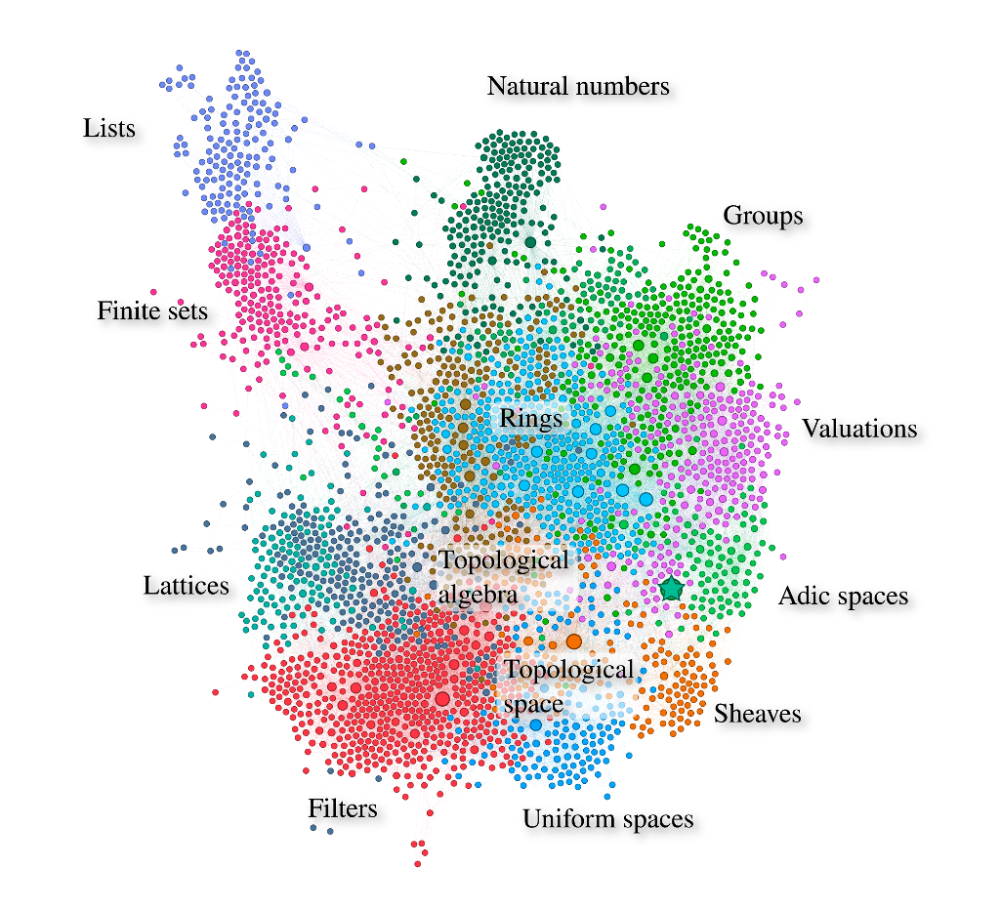

What is it about?
We explained Peter Scholze’s definition of perfectoid spaces to computers, using the Lean theorem prover, mainly developed at Microsoft Research by Leonardo de Moura. Building on earlier work by many people, starting from first principles, we arrived at
-- We fix a prime number p
parameter (p : primes)
/-- A perfectoid ring is a Huber ring that is complete, uniform,
that has a pseudo-uniformizer whose p-th power divides p in the power bounded subring,
and such that Frobenius is a surjection on the reduction modulo p.-/
structure perfectoid_ring (R : Type) [Huber_ring R] extends Tate_ring R : Prop :=
(complete : is_complete_hausdorff R)
(uniform : is_uniform R)
(ramified : ∃ ϖ : pseudo_uniformizer R, ϖ^p ∣ p in Rᵒ)
(Frobenius : surjective (Frob Rᵒ∕p))
/-
CLVRS ("complete locally valued ringed space") is a category
whose objects are topological spaces with a sheaf of complete topological rings
and an equivalence class of valuation on each stalk, whose support is the unique
maximal ideal of the stalk; in Wedhorn's notes this category is called 𝒱.
A perfectoid space is an object of CLVRS which is locally isomorphic to Spa(A) with
A a perfectoid ring. Note however that CLVRS is a full subcategory of the category
`PreValuedRingedSpace` of topological spaces equipped with a presheaf of topological
rings and a valuation on each stalk, so the isomorphism can be checked in
PreValuedRingedSpace instead, which is what we do.
-/
/-- Condition for an object of CLVRS to be perfectoid: every point should have an open
neighbourhood isomorphic to Spa(A) for some perfectoid ring A.-/
def is_perfectoid (X : CLVRS) : Prop :=
∀ x : X, ∃ (U : opens X) (A : Huber_pair) [perfectoid_ring A],
(x ∈ U) ∧ (Spa A ≊ U)
/-- The category of perfectoid spaces.-/
def PerfectoidSpace := {X : CLVRS // is_perfectoid X}
end
You can read more explanations about how to read this code.
Starting from first principles means every definition and every lemma needed to make sense of the above lines has been explained to computers, by us or other people, and checked by computers.
Each node in the following graph is a definition or statement used directly or indirectly in the definition of perfectoid spaces, or in the proofs of the required lemmas. Each edge is a use. There are more than 3000 nodes and 30000 edges. The spatial layout and cluster coloring were computed independently by Gephi, using tools Force atlas 2 and modularity.  Labels were added by hand. The big star is the definition of perfectoid spaces. All other nodes have a size depending on how many nodes use them. You can play with the gephi source. Note that, although the definition of perfectoid spaces is there, we are still working on making the project more beautiful, so the graph may be not perfectly faithful to its current state.
{kind=link}
In order to get a legible graph, we had to remove some foundational nodes like the definition of equality, existential quantifier, or powerset (none of which is a primitive concept in dependent type theory with inductive constructions, the mathematical foundations used by Lean). These nodes were related to too many others, and prevented computation of meaningful spatial layout or modularity classes. We lost of bit of mathematics unity display, but the middle of the graph still features many different colors in the same zone, corresponding to topological algebra (groups or rings equipped with a topology or uniform structure compatible with their algebraic operations). The red class at the bottom is labelled “Filters”, but it also includes quite a bit of naive set theory (somewhat orphaned by the removal of the powerset node). The word lattice should be understood in the order relation theoretic sense, not its group theoretic sense.
If you want to explore the project code interactively, you can read our installation instructions. You can also read the paper we wrote about this project. Note however that this paper was written for people who are somewhat familiar with formalized mathematics. If you are not used to this way of doing mathematics, you should probably first read the next section. In any case, you’re welcome to ask questions about this project at the Zulip chat.
I am a mathematician. I want to know more about Lean.
There are various ways to approach the subject of proof assistants for mathematicians.
If you want to see what proving things interactively look like, you can go to first proofs online, wait for a few seconds until you see “Lean is ready” instead of “Lean is busy” at the very top of the page. Then you can read everything, moving your cursor inside proofs (between begin and end) to see what Lean has to say on the right hand side. Here Lean is executed in the web-browser, so performance is very limited, and you’ll need to ignore the comment saying that right-clicking on a word allow to jump to its definition.
For a more interactive experience, you can try the natural number game where you will be able to define natural numbers and their basic operations, and prove things like commutativity of addition.
If you are interested in the logical foundations, and understanding what the computer does when checking definitions and proofs, you can try this page.
If any of those three methods make you curious to learn more, the canonical next step is to read theorem proving in Lean. You can also install Lean. At any point in the process, it is a good idea to ask questions at the Zulip chat, especially in the new members stream.
Publication
Kevin Buzzard, Johan Commelin, Patrick Massot. Formalising perfectoid spaces. CPP 2020: 299-312. arXiv:1910.12320.
Useful mathematical references
Brian Conrad’s learning seminar.
Scholze etale cohomology of diamonds (ArXiv).